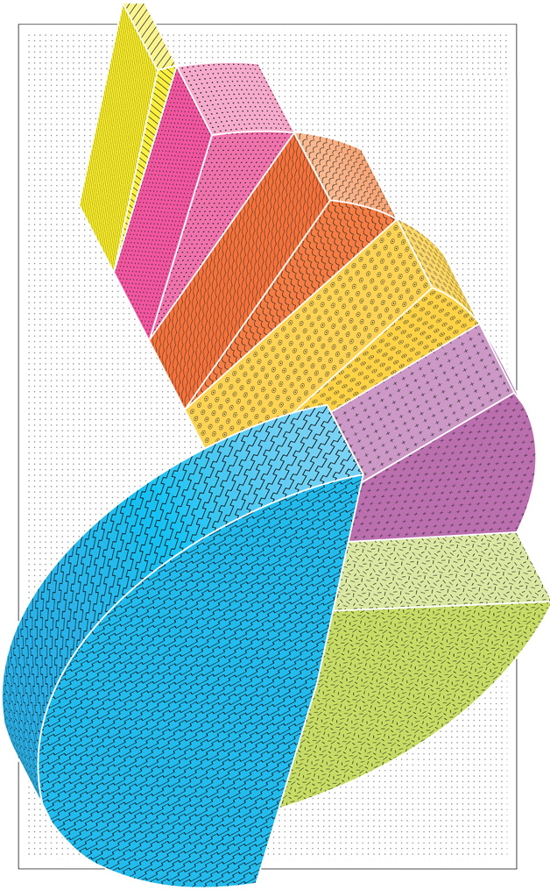

Due: Assignment 1
Complete the six tabbed tutorials in the Introduction to Tableau file (1 – Most Popular Genre, 2 – Top 20 Artists, 3 – Sales Distribution by Region, 4 – Sales by Geography, 5 – Rock vs Alt vs Heavy Metal, Music Sales Dashboard). After you have completed the tutorials, upload the workbook to the Tableau Public Server (it will prompt you to create a data extract along the way). After you have successfully uploaded the file, copy the link (not the embed code) and make a post in Piazza with the link in the details section.
For the post, select the following options (see image below):
- Post type: note
- Post to: entire class
- Select folder: assignment1
- Summary: YOURFIRSTNAME YOURLASTNAME's assignment 1 submission
note: you will lose five points on your assignment if you don't perform those four steps precisely, ten points if you miss more than one item.
Lecture Notes
Review the Syllabus
Make sure you read the entire syllabus. I'm just hitting some of the highlights in these notes.
Contacting me
email = suleiman@maine.edu
skype = jsuleiman
Google+/hangouts = Google hangouts
phone = 207.780.4410
I will be online and available in skype/hangouts during the office hours posted on the syllabus. You are always welcome to set up an appointment (virtual meetings only in the summer).
Every unit will have something due.
For units where you do not have an assignment or a discussion activity, there will be a quiz (in Blackboard). Due dates are clearly listed in the Full Schedule section.
You can’t hand in/do stuff late
Part of what makes online classes work is all of us being on the same page and able to discuss specific items.
Assignments
Visualization assignments must be uploaded to the Tableau Public server and linked via Piazza.
Watch the Videos
The videos are linked from the schedule. The notes that you read here are typically a summary of what was said in the video. The video will be more complete.
Piazza
Piazza is an online forum for class discussions. It is far superior to Blackboard for discussions in every way. You’ll need to sign up using your maine.edu accounts. The signup link for this class is: http://piazza.com/usm.maine/summer2014/mba677bus377 (note: if you’ve used Piazza for other classes you may still use that account to login). After you have signed up, the permanent login link for the course is: piazza.com/usm.maine/summer2014/mba677bus377/home
Install Tableau
Tableau is simple software designed to help people think visually. It is largely drag-and-drop and designed for non-programmers. If you can use Excel, you can use Tableau. We will be using it as the primary visualization tool for this course. We have obtained educational licensing so it is available to you free of charge (it normally costs $1999 per user). As of June 19th, 2014, Tableau is available for Windows and Mac OS X. The key for this class is linked from the "Resources" section of the course homepage. It will be valid for six months. After those six months expire, if you are still a student, you are eligible for a free one year license via the Tableau for Students program.
The installation is straightforward:
- Go to http://www.tableausoftware.com/ and select Free Trial (near the top right of the page)
- Below "Tableau Desktop" (near the bottom left of the page) select "Get Started" to download the installation file.
- Open TableauDesktop.exe (or TableauDesktop.dmg if on OS X) and complete the installation process.
- If you are prompted to enter a key, enter the one you retrieved from the link in the "Resources" section of this course website.
- If you aren't prompted to enter a key, after the installation, launch Tableau Desktop and select Help --> Manage Product Keys and use the key provided to activate Tableau.
Tableau Public
Create a Tableau Public account at https://public.tableausoftware.com. We will be using this to publish visualizations to the web.
Read Few, Chapter 1 and Cairo, Chapter 1
The Few book, Show me the Numbers (2nd ed.) is required for this course...you can purchase it via the bookstore, amazon, ebay, used, new...doesn't matter. Just make sure you get the second edition. Cairo chapter 1 is available on the maine.edu course homepage under readings.
Complete Assignment 1
Assignments are available via the specific unit linked in the schedule. In the video, I go through the first tab of the first tutorial file (i.e., the first part of assignment 1). After you complete the tutorial, publish it to Tableau and link back from Piazza (more complete instructions are in the unit description and video). You'll also need provide a constructive critique of someone else's assignment.
Ask or answer one meaningful question in Piazza.
It should be about or related to something covered in this unit or a technical question. If you find that you comprehend everything and are having trouble coming up with a question to ask -- feel good, and try to answer a question (or edit an answer that you feel could use some additional clarification.). You don't absolutely need to ask/answer a question this week but if you have a question or answer I would encourage you to participate (20% of your grade is based on class participation).
Create a group if you wish to
This class is currently a cross-listed graduate and undergraduate course. As you know, USM has been aggressive in canceling under-enrolled course and since this is one of the first offerings of this class the best way to ensure that it was offered while still being able to adequately judge demand was to cross-list it. Starting with the 2015 calendar year, there will be separate graduate and undergraduate sections of this course. Given that there are mix of students in this class AND it is offered online, you may opt to search for group members (maximum 3 per group). You'll still need to do the assignments individually, but the final project may be done as a group. If you choose this option, you'll have to ensure that your group contains only your level of students (e.g., only graduate or only undergraduate students) and you'll have to live with having part of your group grade allocated by peer evaluation (I'll contact groups individually on how this will be done). You are also perfectly free to complete this entire course individually. I will expect higher quality from group projects as well.
Introduction to Visualization
Now that we got all of the particulars out of the way, it is time to start diving into the material. If you haven't already watched the introduction video on the syllabus portion of the course homepage, please do so. Also, you should complete the reading assignments for this week.
In the late eighteenth century the Scottish engineer William Playfair invented the pie chart, bar chart, line graph, and other graphics to display economic facts. Until then, pictures and graphics were somewhat exclusive to cartography (i.e., map making). Over a century later, Willard Cole Brinton wrote Graphic Presentation and dedicated it to Playfair. The entire book is no longer under copyright and available via this link. In the introduction, Brinton asserts that graphic methods developed so slowly for three reasons:
- There wasn't accurate data readily available.
- There weren't enough competent people available to draw charts on a standardized basis.
- The cost of producing graphics was too high in comparison to the written word.
The insinuation was that we were now entering a time period (i.e., 1914) where the impediments to visualizing data were disappearing. Brinton was a little off on his timing in that the field of information visualization didn't start picking up steam for almost another seventy years (1982) when Edward Tufte wrote his seminal work "The Visual Display of Quantitative Information." Indeed, most of the field of information visualization has developed over the past three decades when computers allowed us to create graphics without having to learn to draw. In other words, visualization became scalable. The author of the book we are using in class, Stephen Few, has greatly contributed to the improved use of visualizations in a variety of context, most notably in business intelligence applications.
The downside of the increased ease in creating graphs is that there are a lot of bad graphics out there. There is an entire blog dedicated to examining bad visualizations - junkcharts. Often, people don't know how to create graphs and use the defaults provided by an application like Excel (which may or may not be good). Sometimes, there creativity gets the better of them like in the exploded pie chart below presented in a wired.com article about the anatomy of a winning TED talk.

In chapter 1, Few goes over several examples of poorly designed charts and lays out the scope of the rest of the material. In that, he discusses four purposes for tables and graphs in business.
- Analyzing
- Communicating
- Monitoring
- Planning
This class is also designed for non-business majors using any type of data. I prefer to think of visualization as storytelling. When telling a story, your aim might be to inform or to persuade. When you are using visualization for your own analysis you are essentially story seeking (i.e., trying to determine what is going on). The Functional Art, a book written by Alberto Cairo (you are assigned chapter 1 for this week) is more inline with this train of thought but it lacks the prescriptive heuristics (e.g., under what conditions should I use a line vs bar chart) that the Few book provides. This course will be more heavily skewed towards storytelling as opposed to story seeking. In the next unit, we will move beyond the introduction and start getting more to the nitty-gritty of visualization. I didn't want to start that material in this unit since you already have enough on your plate getting acclimated to the technology used in this course.